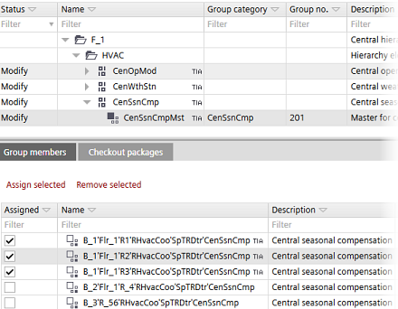

团体成员详情
组成员详细信息窗格具有以下选项卡：
- Details
- Check out packages

Details tab (Group members)
详细信息窗格（组成员）包含用于将组成员分配给组管理员的按钮。
Assigning group members to group managers
Column/Command | 描述 |
|---|---|
已分配 | 复选框以选择组成员并将其分配给组管理员。 |
姓名 | 小组成员的姓名。 |
描述 | 群组成员的描述。 |
分配选定的 | 将选定的组成员分配给组管理员。 |
删除选定的 | 从组管理员中删除分配的组成员。 |
Checkout packages tab
显示建筑元素、区域和设备的签出包。签出包指示相应的项目路径必须是可写的。这允许识别要从具有 Branch Office Server (BOS) 的分布式工程环境中的项目存储库签入或签出的目录。
仅列出最上面的文件夹，因为只需检出最上面的文件夹。
柱子 | 描述 |
|---|---|
文件夹 | 保存应用程序模板站的文件夹的相对路径。 |
描述 | 应用程序模板的名称。 |
类型 | 项目或模板的类型，例如应用程序模板或 ABT Pro 项目。 |